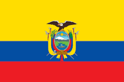

¿De qué se trató el Mundial de 2014?
La Copa Mundial de la FIFA 2014 fue la vigésima edición del torneo y se disputó en Brasil entre el 12 de junio y el 13 de julio de 2014. Esta cita marcó el regreso del certamen a suelo brasileño tras 64 años (luego de la mítica edición de 1950). El evento estuvo impregnado de una atmósfera vibrante bajo el lema oficial "Todos en un mismo ritmo" (All in one rhythm), consolidando una producción de enorme envergadura mediática y logística.
El campeonato estuvo marcado por hitos institucionales de enorme relevancia histórica. Se continuó utilizando el trofeo oficial estrenado en 1974: la Copa Mundial de la FIFA, diseñada por Silvio Gazzaniga. A nivel organizativo, el formato se mantuvo firme con 32 selecciones distribuidas en 8 grupos de 4 equipos. Sin embargo, en el aspecto reglamentario, este torneo pasó a la historia por la implementación definitiva de dos herramientas tecnológicas revolucionarias: el sistema de detección automática de goles (tecnología de línea de gol) para evitar los "goles fantasma", y el uso del aerosol evanescente por parte de los árbitros para marcar la distancia de las barreras.
En el plano futbolístico, la Copa del Mundo de 2014 ofreció un nivel técnico superlativo y una cantidad de goles espectacular. La selección de Alemania, dirigida por Joachim Löw, estructuró un fútbol colectivo armónico, físico y de alta precisión. En la gran final, disputada en el Estadio Maracaná de Río de Janeiro ante unos 74.738 espectadores, Alemania se coronó campeona tras derrotar a Argentina por 1-0 en la prórroga, gracias a un agónico gol de Mario Götze en el minuto 113, luego de empatar 0-0 en los 90 minutos reglamentarios.
Alemania consiguió de esta forma su cuarto campeonato mundial, quebrando una sequía de 24 años y convirtiéndose en la primera selección europea en coronarse en territorio americano.
Informacion que tenes que saber
Info general
- País Anfitrión: Brasil
- Fecha de Inicio:
12 de Junio de 2014
(12/06/2014) - Fecha de Finalizacion:
13 de Julio de 2014
(13/07/2014) - Duracion: 32 dias
- Organizador: FIFA
- Edicion: XX
Estadisticas
- Partidos jugados: 64
- Goles anotados: 171 (Récord histórico compartido)
- Promedio de gol: 2,67 por partido
- Máximo goleador:
James Rodríguez
(6 goles) - Final:
Alemania 1-0 (pró.) Argentina
info de la Ciudad
- Ciudades Sede: 12
- Selecciones Participantes: 32
- Estadios Utilizados: 12
- Estadio Principal:
Maracaná (Río de Janeiro) - Asistencia total:
3.429.873 espectadores
Podio
| Posicion | Seleccion | Bandera |
|---|---|---|
| 1º Puesto | Alemania |  |
| 2º Puesto | Argentina |  |
| 3º Puesto | Países Bajos |  |
| 4º Puesto | Brasil |  |
(Nota: Alemania se consagró campeona del mundo por cuarta vez en su historia, tras vencer a Argentina por 1-0 gracias a un agónico gol de Mario Götze en el minuto 113 de la prórroga. El tercer puesto quedó en manos de Países Bajos, mientras que Brasil, anfitrión del torneo, completó el podio en el cuarto lugar).
Historia completa de la Copa Mundial de la FIFA 2014
Brasil fue elegida de forma unánime como sede en 2007 bajo el sistema de rotación de continentes de la FIFA. La preparación estuvo marcada por la construcción de recintos colosales como el Arena da Amazônia en Manaos o el Estadio Nacional de Brasilia.
La fase de grupos regaló momentos de impacto sísmico mundial. España, la campeona defensora del título, sufrió una humillante eliminación temprana tras ser goleada 5-1 por los Países Bajos (con un icónico gol de cabeza volador de Robin van Persie) y caer 2-0 ante Chile. Costa Rica se convirtió en el "Matagigantes" histórico al liderar el Grupo de la Muerte por encima de tres campeones del mundo: Uruguay, Italia e Inglaterra. Por su parte, la Colombia de James Rodríguez deslumbró con un fútbol vistoso y alegre.
Desarrollo del torneo
La fase de eliminación directa elevó el dramatismo. En los cuartos de final, Brasil perdió a su máxima estrella, Neymar, por una fractura vertebral tras un choque con el colombiano Camilo Zúñiga. Esto pavimentó el camino para el suceso más impactante de la historia moderna del fútbol: el "Mineirazo". En las semifinales en Belo Horizonte, Alemania despedazó a un Brasil huérfano de liderazgo con un categórico e inverosímil 7-1, anotando 5 goles en los primeros 29 minutos. En ese mismo encuentro, el delantero alemán Miroslav Klose anotó su gol número 16 en mundiales, superando al brasileño Ronaldo como el máximo goleador histórico de la competición.
La gran final
La final de Río de Janeiro enfrentó a Alemania y a la Argentina de Lionel Messi. Fue un duelo táctico cerrado y de alta tensión, con oportunidades claras para ambos bandos. Cuando el partido parecía destinado a decidirse en la tanda de penaltis, en el minuto 113 del tiempo extra, André Schürrle desbordó por la banda izquierda y centró para Mario Götze, quien controló el balón con el pecho y definió cruzado con una volea magistral para batir a Sergio Romero, sellando la cuarta estrella alemana.
Alemania consiguió así su cuarto campeonato mundial, quebrando una sequía de 24 años y convirtiéndose en la primera selección europea en coronarse en territorio americano.
⚽ Pelota Oficial del Mundial 2014

ADIDAS BRAZUCA
El Brazuca fue el balón oficial de la Copa Mundial de la FIFA Brasil 2014, fabricado por la firma alemana Adidas. Su nombre fue elegido por votación popular de los aficionados locales, un modismo que simboliza el orgullo del estilo de vida brasileño.
Información General
Nombre: Adidas Brazuca
Fabricante: Adidas (Alemania)
Material: 6 paneles idénticos termosellados, gama de colores vivos inspirada en las pulseras de los deseos de Bahía
Torneo: Copa Mundial FIFA Brasil 2014
Características
- Configuración innovadora de 6 paneles idénticos termosellados, a diferencia de los 8 paneles de generaciones anteriores.
- Gracias a la geometría simétrica de sus paneles, ofrecía una estabilidad aerodinámica superior y un agarre optimizado.
- Recibió elogios unánimes de jugadores y guardametas, en clara contraposición a las críticas recibidas por su predecesor.
- Representó la respuesta de Adidas a las quejas generadas por el polémico Jabulani de 2010.
Dato curioso
A diferencia del Jabulani, el Brazuca se convirtió en uno de los balones más elogiados de la historia mundialista, gracias a su comportamiento estable en el aire y su agarre confiable bajo cualquier condición de juego.
Selecciones Participantes
Europa
Alemania  Bélgica
Bélgica  Bosnia y Herzegovina
Bosnia y Herzegovina  Croacia
Croacia  España
España  Francia
Francia  Grecia
Grecia  Inglaterra
Inglaterra  Italia Países Bajos
Italia Países Bajos  Portugal
Portugal  Rusia
Rusia  Suiza
Suiza Debutante notable
Bosnia y Herzegovina Sudamérica
Argentina Brasil (Anfitrión)  Chile
Chile  Colombia
Colombia 
Ecuador Uruguay
Uruguay Norteamérica, Centroamérica y Caribe
 Costa Rica
Costa Rica  Estados Unidos
Estados Unidos  Honduras
Honduras  México
México Asia
 Australia
Australia  Corea del Sur
Corea del Sur  Irán
Irán  Japón
Japón África
 Argelia
Argelia  Camerún
Camerún  Costa de Marfil
Costa de Marfil  Ghana
Ghana  Nigeria
Nigeria
Sedes |
|||
|---|---|---|---|
|
El Mundial de 2014 se disputó en doce ciudades sede y doce estadios brasileños, marcando el regreso del certamen a Brasil tras 64 años de ausencia. El Estadio Maracaná de Río de Janeiro fue la sede principal del torneo, albergando la gran final entre Alemania y Argentina ante cerca de 74.738 espectadores. En total se jugaron 64 partidos repartidos entre los doce estadios, con una asistencia total de 3.429.873 espectadores a lo largo de todo el campeonato. (Nota: Fue el primer mundial en implementar la tecnología de línea de gol y el aerosol evanescente para los árbitros). |
|||
| Nombre del Estadio | Ciudad | Capacidad aprox. | Partidos Jugados |
Estadio Maracaná |
Río de Janeiro | 74.738 | 7 (incl. la Gran Final) |
Estadio Nacional |
Brasilia | 69.349 | 7 |
Arena de São Paulo |
São Paulo | 63.321 | 6 (incl. el Partido Inaugural) |
Estadio Castelão |
Fortaleza | 60.342 | 6 |
Estadio Mineirão |
Belo Horizonte | 58.170 | 6 (incl. el "Mineirazo") |
Estadio Arena Fonte Nova |
Salvador | 51.900 | 6 |
Estadio Beira-Rio |
Porto Alegre | 43.394 | 5 |
Arena Pernambuco |
Recife | 42.610 | 5 |
Arena da Amazônia |
Manaos | 40.549 | 4 |
Arena Pantanal |
Cuiabá | 39.898 | 4 |
Estadio Arena da Baixada |
Curitiba | 39.631 | 4 |
Estadio Arena das Dunas |
Natal | 38.958 | 4 |
Formato del torneo
El mundial de 2014 ejecutó la estructura de competición tradicional sin variantes logísticas transfronterizas:
Primera Fase de Grupos: Las 32 selecciones se organizaron en 8 grupos (del A al H) de 4 equipos cada uno. Avanzaron a la siguiente fase únicamente los dos mejores de cada zona.
Fase de Eliminación Directa: Cruces tradicionales a partido único desde Octavos de Final hasta la Gran Final. En caso de empate al cabo de los 90 minutos reglamentarios, se jugaron dos tiempos extra de 15 minutos cada uno. De persistir la paridad, el ganador se definió mediante tiros desde el punto de penalti.
Innovación Tecnológica: Se implementó por primera vez de forma definitiva el sistema de detección automática de goles (tecnología de línea de gol) para evitar los "goles fantasma", junto con el uso del aerosol evanescente por parte de los árbitros para marcar la distancia reglamentaria de las barreras en tiros libres.
Árbitros de la Copa Mundial de la FIFA 2014 por pais
| Arbitros | Pais |
|---|---|
| Nicola Rizzoli (Árbitro de la gran final) | |
| Howard Webb | |
| Björn Kuipers | |
| Cüneyt Çakır |  |
| Yuichi Nishimura | |
| Carlos Velasco Carballo | |
| Marco Antonio Rodríguez | |
| Pedro Proença | |
| Mark Geiger | |
| Ravshan Irmatov |  |
Este mundial pasó a la historia como el primero en utilizar de forma oficial la tecnología de línea de gol y el aerosol evanescente, aunque la actuación arbitral siguió generando intensas polémicas, como el penal inexistente sancionado por Yuichi Nishimura en el Partido Inaugural.
Resumen del torneo — Copa Mundial de la FIFA 2014
Primera Fase de Grupos
La fase de grupos regaló momentos de impacto sísmico mundial. España, la campeona defensora del título, sufrió una humillante eliminación temprana tras ser goleada 5-1 por los Países Bajos y caer 2-0 ante Chile. Costa Rica se convirtió en el "Matagigantes" histórico al liderar el Grupo de la Muerte por encima de tres campeones del mundo: Uruguay, Italia e Inglaterra. Por su parte, la Colombia de James Rodríguez deslumbró con un fútbol vistoso y alegre.
Fase de Eliminación Directa
Octavos de Final
Países Bajos
2:1
México
Arjen Robben exageró una caída en el área en el minuto 92 ante la marca de Rafael Márquez; el árbitro Pedro Proença decretó un polémico penal que Klaas-Jan Huntelaar convirtió en el gol de la clasificación europea.
Brasil
2:1
Colombia
Brasil avanzó a semifinales, pero el defensor colombiano Camilo Zúñiga impactó con su rodilla en la espalda de Neymar, causándole una fractura vertebral que lo marginó del resto del campeonato.
Cuartos de Final
Argentina
1:0
Bélgica
Argentina selló su pase a semifinales con un gol de Gonzalo Higuaín.
Brasil
1:7
Alemania
El "Mineirazo": Alemania despedazó a un Brasil huérfano de liderazgo tras la baja de Neymar, anotando 5 goles en los primeros 29 minutos. Miroslav Klose superó a Ronaldo como máximo goleador histórico de los mundiales.
Semifinales
Semifinal 1
Brasil
1:7
Alemania
El "Mineirazo" pasó a la historia como una de las goleadas más impactantes de la historia moderna del fútbol, sellando el pase de Alemania a la gran final.
Semifinal 2
Argentina
0:0 (4:2 pen.)
Países Bajos
Argentina selló su pase a la gran final de Río de Janeiro en la tanda de penaltis.
Gran Final
Finalistas
Alemania ArgentinaFinal
Argentina 0 Alemania 1 (pró.)(Duelo táctico cerrado y de alta tensión, con oportunidades claras para ambos bandos. En el minuto 113 del tiempo extra, André Schürrle desbordó por la banda izquierda y centró para Mario Götze, quien controló el balón con el pecho y definió cruzado con una volea magistral para batir a Sergio Romero, dándole a Alemania su cuarta estrella mundial.)
Máximos goleadores — Copa Mundial de la FIFA 2014
| Jugador | Goles | Pais |
|---|---|---|
| James Rodríguez | 6 | |
| Thomas Müller | 5 | |
| Lionel Messi | 4 | |
| Neymar | 4 | |
| Robin van Persie | 4 | |
Máximos Asistidores (Premio a la Creación de Juego) — Copa Mundial de la FIFA 2014
| Jugador | Asistencias | Pais |
|---|---|---|
| Juan Cuadrado | 4 | |
| Toni Kroos | 4 | |
| Thomas Müller | 3 | |
| Daley Blind | 3 | |
Autogoles Registrados (Goles en Contra) — Copa Mundial de la FIFA 2014
El torneo registró autogoles a lo largo de los 64 partidos disputados:
| Jugador | A favor de | Pais |
|---|---|---|
| Marcelo | Croacia | |
| Noel Valladares | Francia | |
| Sead Kolašinac | Argentina | |
| John Boye | Portugal | |
| Joseph Yobo | Francia | |
Equipo estelar de los usuarios (FIFA Fan Dream Team) — Copa Mundial de la FIFA 2014
El once ideal definitivo fue elegido por el voto masivo de los aficionados de todo el mundo en la plataforma oficial de la FIFA, quedando estructurado bajo un esquema 4-3-3.
| Jugador | Posición | Pais |
|---|---|---|
| Manuel Neuer | Portero | |
| Mats Hummels | Defensa | |
| Thiago Silva | Defensa | |
| Marcelo | Defensa | |
| David Luiz | Defensa | |
| Ángel Di María | Mediocampista | |
| Toni Kroos | Mediocampista | |
| James Rodríguez | Mediocampista | |
| Neymar | Delantero | |
| Lionel Messi | Delantero | |
| Thomas Müller | Delantero | |
Entrenador más votado: Joachim Löw (Alemania)
Premios Oficiales — Copa Mundial de la FIFA 2014
| Premio | Jugador | Pais |
|---|---|---|
| 🥇 Mejor Jugador (Balón de Oro) | Lionel Messi | |
| ⚽ Ganador de la Bota de Oro | James Rodríguez (6 goles) | |
| 🧤 Mejor Portero (Guante de Oro) | Manuel Neuer | |
| 👶 Mejor Jugador Joven | Paul Pogba | |
| ✨ Gol del Torneo | James Rodríguez (ante Uruguay en Octavos de Final) | |
| 🤝 Premio Fair Play | Selección de Colombia | |
Estadísticas Analíticas Avanzadas: El Índice Castrol
El sistema analítico oficial de la FIFA continuó con el rastreo de rendimiento de los jugadores a través de variables matemáticas aplicadas en tiempo real, evaluando cada acción de los jugadores en el campo (pases, recuperaciones, disparos, entradas defensivas) y otorgándoles una calificación objetiva de 1 a 10.
| Jugador | Puntaje | Pais |
|---|---|---|
| Toni Kroos (Líder del torneo gracias a su altísima precisión de pases y control del mediocampo) | 9.79 | |
| Arjen Robben (Impacto ofensivo letal y aceleración en conducción de balón) | 9.74 | |
| Stefan de Vrij (Efectividad en intercepciones y recuperaciones limpias) | 9.70 | |
| Mats Hummels | 9.66 | |
| Thomas Müller | 9.56 | |
Controversias de la Copa Mundial de la FIFA 2014
El Mundial de Brasil 2014 quedó marcado por algunos de los episodios más insólitos y polémicos de la historia reciente del fútbol, desde mordiscos hasta arbitrajes que inclinaron resultados decisivos.
-
El Mordisco de Luis Suárez (Fase de Grupos)
Durante el decisivo encuentro del Grupo D entre Italia y Uruguay en Natal, el delantero charrúa Luis Suárez protagonizó uno de los escándalos más insólitos de la historia del fútbol al morder en el hombro al defensor italiano Giorgio Chiellini. Aunque el árbitro Marco Rodríguez no presenció la agresión en directo y no lo expulsó en el partido, la FIFA actuó de oficio basándose en las repeticiones de televisión, imponiéndole a Suárez una sanción ejemplarizante: 9 partidos de suspensión y 4 meses de inhabilitación absoluta de toda actividad relacionada con el fútbol.
-
El Arbitraje de Yuichi Nishimura (Partido Inaugural)
La polémica estalló en el mismísimo partido de apertura entre Brasil y Croacia. Con el marcador empatado 1-1, el atacante brasileño Fred simuló una caída dentro del área ante un contacto mínimo del defensor Dejan Lovren. El árbitro japonés Yuichi Nishimura sancionó un penalti inexistente que Neymar transformó en el 2-1, inclinando la balanza a favor del anfitrión y desatando duras críticas internacionales sobre el favoritismo arbitral hacia el equipo local.
-
El Penalti de Arjen Robben y el "No era penal" (Octavos de Final)
En el enfrentamiento entre Países Bajos y México en Fortaleza, el marcador marchaba 1-1 en el tiempo de descuento. En el minuto 92, Arjen Robben encaró en el área y exageró una caída ante la marca de Rafael Márquez. El juez Pedro Proença decretó una polémica pena máxima que Klaas-Jan Huntelaar convirtió en el gol de la clasificación europea. La jugada inmortalizó la célebre frase popular "No era penal" en la cultura deportiva mexicana.
-
El Rodillazo a Neymar (Cuartos de Final)
En un partido de extrema fricción física entre Brasil y Colombia, el defensor colombiano Camilo Zúñiga impactó fuertemente con su rodilla en la espalda de Neymar durante una disputa aérea. La acción le causó al astro brasileño la fractura de la tercera vértebra lumbar, marginándolo por el resto del campeonato. La falta ni siquiera fue sancionada con tarjeta amarilla por el colegiado Carlos Velasco Carballo, lo que encendió feroces debates sobre la violencia permitida en el campo.
Identidad del Torneo: Diseño, Marketing y Medios
La Revolución de la Inauguración
La ceremonia inaugural tuvo lugar el 12 de junio de 2014 en el Arena Corinthians de São Paulo, previo al partido de apertura en el que Brasil derrotó 3-1 a Croacia. El show rindió homenaje a la rica naturaleza del país, a su diversidad cultural y a la pasión nacional por el fútbol. El clímax musical llegó con la presentación en vivo del tema oficial por parte de Jennifer Lopez, Pitbull y la cantante nativa Claudia Leitte desde una estructura con forma de esfera luminosa.
Mascota Oficial: "Fuleco"
Un armadillo de tres bandas (Tolypeutes tricinctus), una especie endémica de Brasil en peligro de extinción. Su nombre fusionaba las palabras "Fútbol" y "Ecología", portando un mensaje de concientización ambiental a lo largo del certamen.
Canción Oficial: "We Are One (Ole Ola)"
Un tema de ritmos pop y samba interpretado por Pitbull, Jennifer Lopez y Claudia Leitte. Convivió en popularidad con el himno oficial "Dar um Jeito (We Will Find a Way)" de Santana y Shakira, así como con el éxito masivo "La La La (Brazil 2014)".
Balón Oficial: Adidas Brazuca
Su nombre fue elegido por votación popular de los aficionados locales. Su diseño presentaba una configuración innovadora de 6 paneles idénticos termosellados y una gama de colores vivos inspirada en las tradicionales pulseras de los deseos de Bahía. Gracias a la geometría simétrica de sus paneles, ofrecía una estabilidad aerodinámica superior y un agarre optimizado en comparación con su predecesor, el polémico Jabulani de 2010, recibiendo elogios unánimes de jugadores y guardametas.
El Récord Histórico de las Clasificaciones
Un total de 203 asociaciones nacionales de las 6 confederaciones disputaron las fases eliminatorias continentales rumbo a Brasil 2014. Se mantuvo la regla de que el campeón defensor (España) debía ganarse su boleto en la cancha, dejando únicamente al anfitrión (Brasil) con el pase directo. La selección de Bosnia y Herzegovina hizo historia al clasificar por primera vez en su historia a una fase final de la Copa del Mundo como nación independiente.
El Legado del Torneo
El certamen dejó un legado transformador: marcó el regreso de la Copa del Mundo a Brasil tras 64 años, introdujo de forma definitiva la tecnología de línea de gol y el aerosol evanescente, y consagró a Alemania como tetracampeona mundial, la primera selección europea en coronarse en territorio americano. El "Mineirazo" quedó grabado como uno de los sucesos más impactantes de la historia moderna del fútbol.
Tabla de Rendimiento y Posiciones Finales
| Posicion | Seleccion | Pts | PJ | PG | PE | PP | GF | GC | Dif | Rendimiento |
|---|---|---|---|---|---|---|---|---|---|---|
| 1 | Alemania |
19 | 7 | 6 | 1 | 0 | 18 | 4 | +14 | 90,5% |
| 2 | Países Bajos |
17 | 7 | 5 | 2 | 0 | 15 | 4 | +11 | 80,9% |
| 3 | Argentina |
16 | 7 | 5 | 1 | 1 | 8 | 4 | +4 | 76,2% |
| 4 | Brasil |
11 | 7 | 3 | 2 | 2 | 11 | 14 | -3 | 52,3% |
| 5 | Colombia |
12 | 5 | 4 | 0 | 1 | 12 | 4 | +8 | 80,0% |
| 6 | Bélgica |
12 | 5 | 4 | 0 | 1 | 6 | 3 | +3 | 80,0% |
| 7 | Francia |
10 | 5 | 3 | 1 | 1 | 10 | 3 | +7 | 66,6% |
| 8 | Costa Rica |
9 | 5 | 2 | 3 | 0 | 5 | 2 | +3 | 60,0% |
| 9 | Chile |
7 | 4 | 2 | 1 | 1 | 6 | 4 | +2 | 58,3% |
| 10 | México |
7 | 4 | 2 | 1 | 1 | 5 | 3 | +2 | 58,3% |
| 11 | Suiza |
6 | 4 | 2 | 0 | 2 | 7 | 7 | 0 | 50,0% |
| 12 | Uruguay |
6 | 4 | 2 | 0 | 2 | 4 | 6 | -2 | 50,0% |
| 13 | Grecia |
5 | 4 | 1 | 2 | 1 | 3 | 5 | -2 | 41,6% |
| 14 | Argelia |
4 | 4 | 1 | 1 | 2 | 7 | 7 | 0 | 33,3% |
| 15 | Estados Unidos |
4 | 4 | 1 | 1 | 2 | 5 | 6 | -1 | 33,3% |
| 16 | Nigeria |
4 | 4 | 1 | 1 | 2 | 3 | 5 | -2 | 33,3% |
| 17 | Ecuador | 4 | 3 | 1 | 1 | 1 | 3 | 3 | 0 | 44,4% |
| 18 | Portugal |
4 | 3 | 1 | 1 | 1 | 4 | 7 | -3 | 44,4% |
| 19 | Croacia |
3 | 3 | 1 | 0 | 2 | 6 | 6 | 0 | 33,3% |
| 20 | Bosnia y Herzegovina |
3 | 3 | 1 | 0 | 2 | 4 | 4 | 0 | 33,3% |
| 21 | Costa de Marfil |
3 | 3 | 1 | 0 | 2 | 4 | 5 | -1 | 33,3% |
| 22 | Italia |
3 | 3 | 1 | 0 | 2 | 2 | 3 | -1 | 33,3% |
| 23 | España |
3 | 3 | 1 | 0 | 2 | 4 | 7 | -3 | 33,3% |
| 24 | Rusia |
2 | 3 | 0 | 2 | 1 | 2 | 3 | -1 | 22,2% |
| 25 | Ghana |
1 | 3 | 0 | 1 | 2 | 4 | 6 | -2 | 11,1% |
| 26 | Inglaterra |
1 | 3 | 0 | 1 | 2 | 2 | 4 | -2 | 11,1% |
| 27 | Corea del Sur |
1 | 3 | 0 | 1 | 2 | 3 | 6 | -3 | 11,1% |
| 28 | Irán |
1 | 3 | 0 | 1 | 2 | 1 | 4 | -3 | 11,1% |
| 29 | Japón |
1 | 3 | 0 | 1 | 2 | 2 | 6 | -4 | 11,1% |
| 30 | Australia |
0 | 3 | 0 | 0 | 3 | 3 | 9 | -6 | 0,0% |
| 31 | Honduras |
0 | 3 | 0 | 0 | 3 | 1 | 8 | -7 | 0,0% |
| 32 | Camerún |
0 | 3 | 0 | 0 | 3 | 1 | 9 | -8 | 0,0% |
- PTS: PUNTOS
- PJ: PARTIDOS JUGADOS
- PG: PARTIDOS GANADOS
- PE: PARTIDOS EMPATADOS
- PP: PARTIDOS PERDIDOS
- GF: GOLES A FAVOR
- GC: GOLES EN CONTRA
- DIF: DIFERENCIA DE GOL
- RENDIMIENTO: BASADA EN LA EFECTIVIDAD DE PARTIDOS (PG, PE, PP)